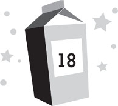

Lunar day 217
Midafternoon
The problem was, I couldn’t really explain my plan to everyone else. There was no way to do it. All I could say was, “Just give me a chance to talk to the Sjobergs.”
“And what if they tell Patton to hurt you again?” Chang asked.
“Then you can break down the door and beat the crap out of all of them,” I replied. “And you’ll be able to tell NASA that you were doing it to protect me.”
Chang considered that, then nodded. “I can deal with that.”
“Hold on,” Mom said. “You’re okay with the possibility that my son might get hurt?”
“I’m not going to get hurt,” I told her.
“Right. Because I’ll be there to protect him,” Chang said.
“No,” I corrected, “because Patton’s not going to hurt me. I promise. Not after last time.”
“What happened last time?” Mom asked.
“Dash scared Patton bad,” Kira said. “He actually peed himself.”
“How?” Dad asked.
“Sometimes bullies crack when you stand up to them,” I replied.
Mom and Dad never came around to the plan, but there wasn’t time to argue. Nina was still missing, and if the Sjobergs were connected to her disappearance, we had to find out. Finally, after Chang swore he would wait right outside the Sjobergs’ door, ready to burst in at the slightest sign of trouble, my parents gave in. After all, there was still plenty of work to do in the search for Nina. They reluctantly returned to the control room to plot a new search grid with Daphne and Dr. Kim while Chang walked me to the Sjobergs’ suite.
He pounded his huge fist on the door and demanded, “It’s Chang. I need to talk to you.”
“Go away,” Lars said through the door. “We have nothing to say to you.” He spoke in his normal, disdainful voice, rather than the pleasant one he’d used for his TV interview.
Chang’s anger flared, but he did his best to keep it in check. “Lars, I’m not asking you to open this door. I’m ordering you to do it as the interim moon-base commander. If you don’t open it, I have the right to kick it open. I’ve already done it once today, so I know it’s not that hard. And then you’ll have a busted door on your suite that you can’t shut or lock until NASA can send up repairs for it, which might be another few months.”
There was an annoyed grunt on the other side of the door, followed by some whispered words in Swedish: the Sjobergs quietly discussing the situation with one another.
Chang pounded on the door again. “I’m losing patience out here! You’ve got five seconds and then I knock this thing off its hinges.”
“All right,” Lars grumbled. “Keep your pants on. I’m coming.” A second later, he opened the door a crack and glared through it. “What is the meaning of this?”
Chang quickly shifted his weight into the door, knocking it open with such force that it clonked Lars in the forehead and sent him sailing backward into Sonja. I stepped into the room behind him.
I’d never been in the guest suite before. In fact, I’d never even had a glimpse of it until seeing the video of the Sjobergs that afternoon. Although it had been billed to them as a “luxury suite,” it looked as crummy as every other room at MBA. It was merely larger, which actually made it seem worse somehow. The Sjobergs didn’t have any more furnishings than we had, just the same cheap InflatiCubes to sit on and a SlimScreen table. In the big room, these few items seemed even smaller. Our room felt relatively cozy. Theirs felt like an empty storage locker.
The only thing that was nicer in their room was their wall-size SlimScreen. It was bigger than ours—as their wall was bigger—and was top-of-the-line. The resolution was amazing. They’d been watching a western on it, which was now paused. Three men were frozen in the midst of a gunfight. It felt as though we were right in the Wild West with them.
Lars, Sonja, and Lily were all staring at us angrily. Lars now had a red welt swelling on his forehead where the door had hit him. “How dare you invade our private space like this?” he spluttered.
To their side, Patton had tensed up in fear upon seeing me. Even though it had been a few hours since Zan had scared him, he still appeared disheveled and on edge.
Which was what I’d been hoping for. I turned to Chang. “I’ll be okay.”
He glanced at me skeptically. “You sure?”
“Yeah.”
“What is going on here?” Lars demanded, then jabbed a thick finger at me. “What’s he doing here?”
“Dash has to ask you guys a few questions,” Chang told him. “Treat him well, okay? If you don’t, I’ll have to come back and teach you to play nice.” With that, he slipped back out the door and closed it behind him.
The angry look on Lars Sjoberg’s face suddenly turned evil. Now that Chang had left me alone with him, he looked like a cat who’d been given a mouse to play with. “You little fool,” he told me. “You have made a terrible mistake coming here.”
“You shouldn’t threaten me,” I told him, then turned to Patton. “Remember what happened when you threatened me today?”
Patton quivered at the memory of the alien beast he’d seen and gave a little whimper.
“Well, I can make that thing come back,” I said. “It’s my friend. . . .”
“That’s not true,” Patton said weakly, like he was trying to convince himself.
“Why do you think it showed up when it did?” I asked. “Why do you think it attacked you and not me? It protects me when I’m in danger. So if any of you cause any trouble for me now, all I have to do is call to it. . . .”
“No!” Patton screamed. He turned to his father, his eyes wide with fear. “Don’t threaten him! Do whatever he says!”
Lars shot an annoyed glance at his son. “Patton, there was no space snake! You imagined it!”
“I didn’t!” Patton screamed back. “I saw it! I swear! It was right in front of my face!”
“Then where is the hole you said it came out of?” Lars demanded. “I didn’t see one! This little jerk is toying with you!”
Rather than deal with Lars anymore, I looked directly at Patton and asked, “Why are you all lying to the news about how much you like MBA?”
Patton started to answer, but before he could, Sonja shouted something at him angrily in Swedish. It sounded like a threat.
Patton clamped his mouth shut.
“Come on,” I told him. “Don’t make me summon the space snake.”
Patton looked to his parents, then to me. He seemed to be trying to figure out which was worse to deal with, angry Sjobergs or a bloodsucking alien serpent.
Sonja kept threatening him in Swedish.
So I stepped up my game as well. “Okay,” I sighed. “But when you’re being eaten alive, don’t say I didn’t warn you.” I cupped my hands over my mouth as if about to call out.
Patton cracked. “No! I’ll talk! Dad and Mom secretly invested in a space travel company!”
“Patton!” his father roared. “Shut your mouth!”
Patton cringed in fear and fell silent again.
But he’d already said enough. The Sjobergs’ behavior suddenly made complete sense. “So that’s what this is all about?” I asked. “You’re trying to make the moon sound great to trick other rich people into coming to visit?”
Lars wheeled on me. “Get out of our room! Right now!”
He was a terrifying man, but I stood my ground anyhow. If I backed out now, Patton might realize I was bluffing, and then I’d never get him to speak again. “What company did you invest in?” I asked Patton.
Sonja’s barrage of Swedish threats increased.
So I leveled a threat of my own. “You should know something about that space snake you saw, Patton. It was only a baby. There are others here that are much, much bigger. There’s a whole nest of them right under the base. I think I’ll summon one of the adults this time. Or maybe two . . .”
“Maximum Adventure Travel!” Patton squawked. “That’s the company! Please don’t call the snakes on me!”
“That’s enough!” Lars bellowed.
“I didn’t want anything to do with any of this!” Patton blurted, then pointed at his father. “It was all his idea! If you want to sic the snake on anybody, it should be him!”
“Patton!” his mother gasped.
Patton ignored her and kept pleading his case. “He made us come up here in the first place. He made us sabotage the robots the other night. . . .”
“Why?” I asked.
“To slow construction of Moon Base Beta. He developed the program to mess up the robots and forced us to install it on the base computer. . . .”
“And that’s what Roddy caught you doing?” I asked.
“Yes.”
“Shut up!” Lily yelled at her brother. “You idiot! You’ll ruin everything!”
Patton screamed back at her. “I’m not about to get eaten by some freaking snake-monster to protect Dad’s scheme!”
“And how does Nina fit into this?” I asked. “What did you do to her?”
Patton gave me a startled look. “Nothing! We didn’t touch her! All we did was mess with the robots!”
“She didn’t find out what you were up to?” I asked.
“No!” Patton cried. “We never heard a thing from her! We didn’t have anything to do with her disappearance, I swear!”
Given his fear of being eaten alive, his answer seemed genuine. Since he was spilling his guts about everything else, it didn’t make sense that he’d lie about Nina.
Lars suddenly sprang at me. I tried to scramble back toward the door, but it was too late. Lars caught me by both arms, pinioning them to my sides, then shook me roughly and screamed in my face. “You had better keep your mouth shut about everything you have heard here!”
“No, Father!” Patton yelled. “Don’t hurt him!”
I recoiled from Lars’s rancid breath, then screamed, “Help!”
“Now you’ve done it!” Patton wailed in fear. “He’s calling the snakes! We’re all going to die!” A big wet spot bloomed once again in his pants.
I wasn’t calling for Zan, though. I was calling for the backup I knew would be there.
The door tore off its hinges as Chang kicked it open. He took one look at Lars and ordered, “Let Dash go.”
Lars didn’t. Either he was too angry at me to pay attention, or he didn’t hear Chang over the screams of the other Sjobergs. Instead he kept threatening me. “If you disobey me, I will make life very difficult for you! You and your whole family!”
“I warned you,” Chang said, and then punched Lars in the face. Lars sailed across the room and bowled over his entire family, who ended up sprawled in a pile on the floor.
Chang turned his attention to me. “You okay?”
I nodded. My arms hurt from Lars grabbing them so tightly, but other than that, I was fine.
Lars was much worse. His lips were both split from Chang’s punch and blood was flowing from them. “You fool!” he yelled. “You have just made the worst mistake of your life! I’ll have you fired for this!”
“You were hurting a child,” Chang said calmly. “Then I warned you to stop and you didn’t. Therefore, my use of force on you was appropriate.”
“I will destroy you!” Lars raged. “I can ruin your life, even from up here on the moon!”
“Stop it!” Patton told his father. “If you keep threatening them, they’re going to call the snake!”
“No,” I said. “Not this time. But you’d better keep your distance from me and all the other kids here from now on. If you bully any of us again—or even think about it—all I have to do is whistle and you’ll be snake chow.”
Patton whimpered. “I’ll be good. I promise.”
“There is no space snake!” Lars roared at him. “Stop being such an idiot!”
“If you keep treating your kids like that,” I said, “I’ll sic it on you.”
Lars stopped yelling and looked at me. There was a hint of fear in his gaze, as though despite his arguments, some part of him was afraid the snake really did exist and might come for him.
I walked out of the room with Chang behind me. There were probably more questions I could have asked the Sjobergs about their involvement with Maximum Adventure, but I had enough to piece together a lot of the story.
And I’d had more than enough of the Sjobergs for one day.
“What’s all this about a space snake?” Chang asked, once we were on the catwalk outside their room.
“It’s just a bloodthirsty alien creature I made up to keep Patton in line.”
“Nice work.” Chang gave me a pat on the back, then sighed.
“What’s wrong?”
“I was sure they were connected to Nina’s disappearance somehow. Now we’re back to grasping at straws again.”
The pride I’d felt about outwitting the Sjobergs vanished. Chang was right. Nina was still missing—and we weren’t any closer to figuring out where she was.